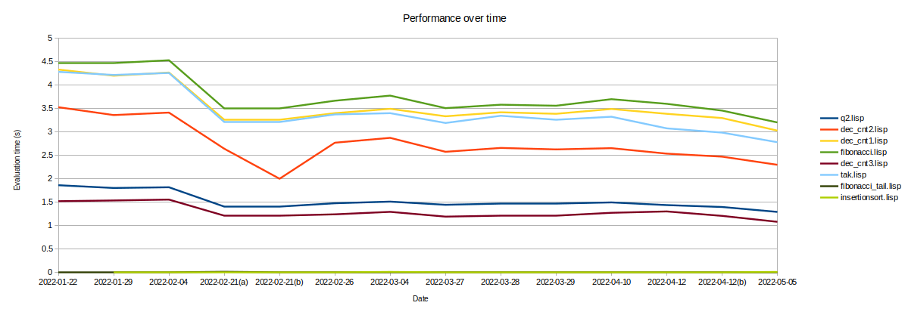

LispBM
LispBM is a lisp/scheme like lanuage implemented in C targeting microcontrollers such
as the STM32 or the NRF52. LispBM can be "embedded" into an application running
on a microcontroller to make your application scriptable using a lisp-like language.
LispBM sources can be found on GitHub.
LispBM performance
The performance of the LispBM implementation is changing over time as
we add new functionality or perform a burst effort of optimization.
The values in the chart below are measured on an STM32F4 at 168MHz.

Documentation
Work in progress LispBM documentation
© Copyright 2022 Bo Joel Svensson